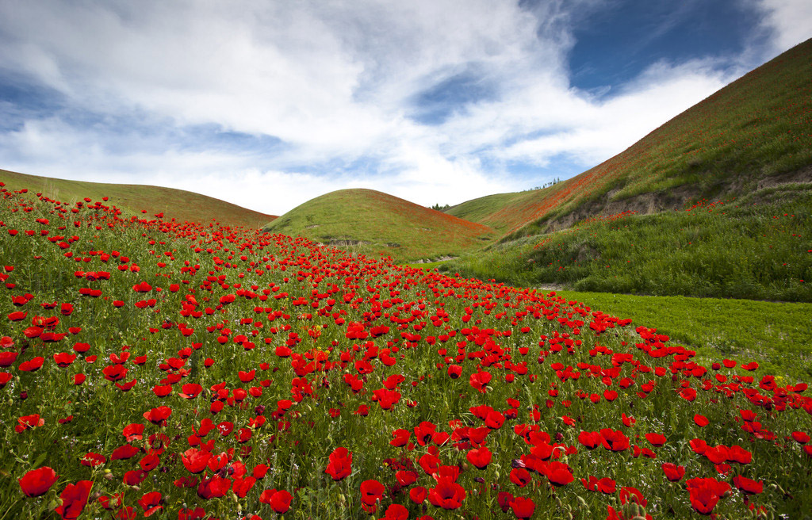

天山是亚洲中部的一条大山脉，横贯中国新疆的中部，西端伸入哈萨克斯坦。长约2500公里，宽约250--300公里，平均海拔约5000米。最高峰是托木尔峰，海拔为7435.3米，汗腾格里峰海拔6995米，博格达峰的海拔5445米。这些高峰都在中国境内，峰顶白雪皑皑。新疆的三条大河----锡尔河、楚河和伊犁河都发源于此山。天山山地有广大的断块陷落盆地和谷地，如中国境内的哈密盆地、吐鲁番盆地、焉耆盆地、尤尔都斯盆地、伊犁河谷地等。山地与盆地的走向都受断裂控制。
汗腾格里峰地区是天山最宽大最高耸的山区，其中主峰汗腾格里峰海拔6995米，托木尔峰7435米。雪线变动于3500～4500米之间，北低南高，有不少山峰终年积雪。天山的雪峰----博格达峰上的积雪终年不化，人们叫它雪海。在博格达的山腰上，有一个名叫天池的湖泊，海拔1901米，深约90米。池 而成，清澈透明，像一面大镜子。洁白的雪峰，翠绿的云杉倒映湖中，构成了一幅美丽的图画，是新疆著名的旅游胜地。
中国境内的天山通常以东经88°附近的达坂城为界，分为东西两部分。西段山势高峻，山脉延续，少断裂垭口；谷地盆地面积较小，冰川发育，南北交通困难。东段除博格达山较高外，山势较缓低。冰川规模较小。由于天山隆起于塔里木盆地和准噶尔盆地之间，成为气候的重要分界。北侧较湿润，南侧干旱。北坡有云杉林分布，南坡多山地草原。植物、土壤垂直变化明显。
北坡的云杉林分布在海拔1600～2800米之间，为重要的森林资源。发源于山地的河流有伊犁河、玛纳斯河、阿克苏河等，在山间或山前形成大面积绿洲，成为新疆的主要农业区。
伊犁河谷盛产苹果，吐鲁番盆地盛产葡萄。山地草场广阔，为优良牧场。伊犁马、焉耆马、新疆细毛羊均为优良品种。山间矿产资源有铁、有色金属、煤等。兰新铁路经哈密盆地、吐鲁番盆地至乌鲁木齐市，穿过天山山脉。由伊犁至焉耆的天山山区公路也已开通。
游览心情
到天山游玩，如同其它风景名胜古迹，春季、夏季、秋季、冬季景色各有魅力，只有身临其境才能欣赏到山水如画的美。所以出发前对天山景区概况要有所了解，如果是跟随旅游团出游，带队导游会给游客讲解天山的人文地理；如果是自助游一定要参考天山必去景点推荐。最后，和亲友结伴出行照相机必不可少，用照片记录下天山 旅途中愉悦的心情。
